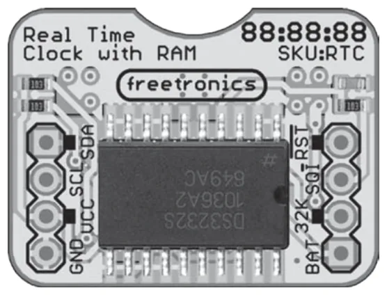

In this chapter you will
- Set and retrieve the time and date from a real-time clock module
- Discover new ways to connect devices to an Arduino
- Create a digital clock
- Build an employee RFID time clock
A real-time clock (RTC) IC module is a small timekeeping device that opens all sorts of possibilities for Arduino projects. Once set with the current time and date, an RTC provides accurate time and date data on request.
You’ll find many different RTC ICs on the market, some more accurate than others. In this chapter, we’ll use the Maxim DS3232; it doesn’t require any external circuitry other than a backup battery, and it’s incredibly accurate and quite robust in module form. The DS3232 is available as a breakout board from various retailers, including the version from Freetronics (http://www.freetronics.com/rtc/) that is shown in Figure 18-1.
